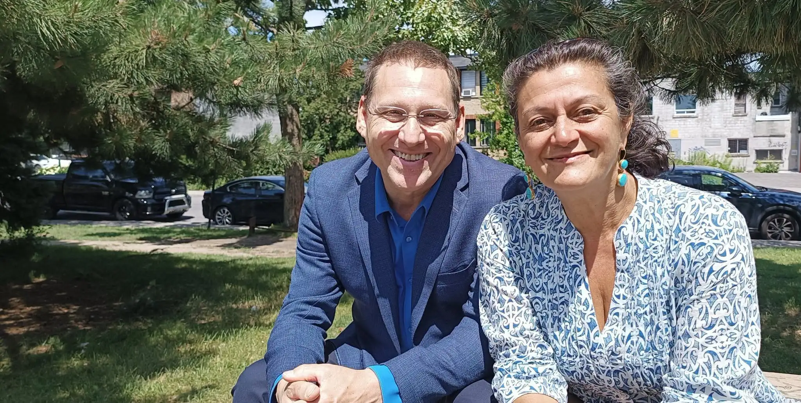
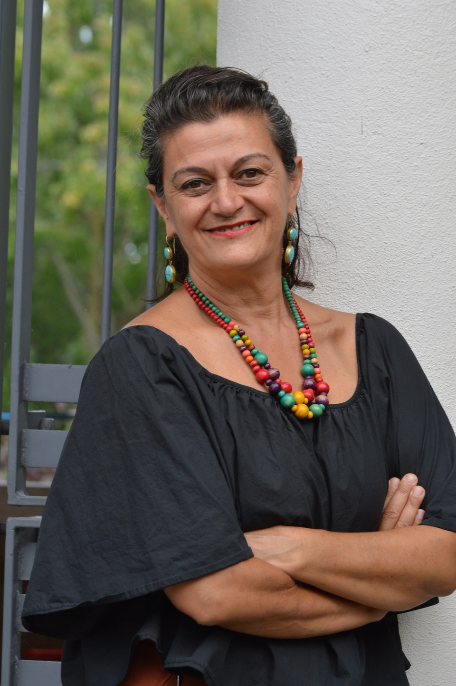

ECONOMIC JUSTICE
- Make the ultra-rich pay their fair share
- A just transition that leaves no one behind
- Public ownership to end price gouging

Your candidate in
Laurier—Sainte-Marie


Nimâ Machouf
We keep being told that in these uncertain times, we have to tighten our belts. That we have to choose between our economy and our basic needs, between jobs and the planet, between making ends meet today and building a better tomorrow.
We shouldn’t have to choose.
Canada is a wealthy country. Wealthy enough to house everyone and tackle the climate crisis without compromising our future.
The real question isn’t whether we can afford it; it’s whether our wealth should benefit regular people or the ultra-rich.
Our rights.
Our money.
Our future.
Let’s take back what is ours.
Nimâ Machouf
The NDP is the only party in Ottawa that stands up for working people, not the stock market. Because if politics isn’t about taking care of the people in our community, what is it for?
Many people bet on Steven Guilbeault to change the Liberal Party from the inside. And the result? Under Mark Carney, it’s goodbye to the consumer carbon price and hello to yet another pipeline. Guilbeault, the environmentalist the people of Laurier–Sainte-Marie voted for, decided to walk out on Carney’s government.
The lesson is clear. You can’t change the Liberals from the inside. You force them to do the right thing from the outside.

A Montrealer at heart: Of Iranian origin, Nimâ was born in France while her parents were studying there. She returned to Iran at the age of eight. In 1983, she arrived in Montreal after the Machouf family had to flee repression under the ayatollahs’ regime. This is where she studied, raised her family and put down roots in the heart of her community.
A scientist: An epidemiologist with a doctorate in public health, specializing in HIV, infectious diseases and addiction, she teaches at the Université de Montréal School of Public Health.
A grassroots activist: Eight years on the board of Médecins du Monde with missions in Africa and Central America. Decades of feminist and community engagement.
A woman of courage: In October 2025, she boarded the Conscience, a humanitarian ship sailing with a flotilla bound for Gaza. When the Israeli army intercepted her ship at sea, Nimâ was detained, then deported. She would do it again without hesitation because the siege of Gaza must be broken.
Guilbeault is gone. It is time to make way for Nimâ.
Our priorities
